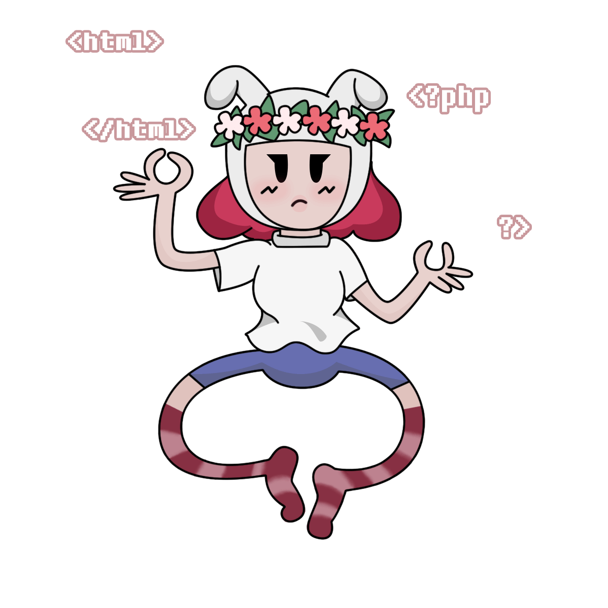
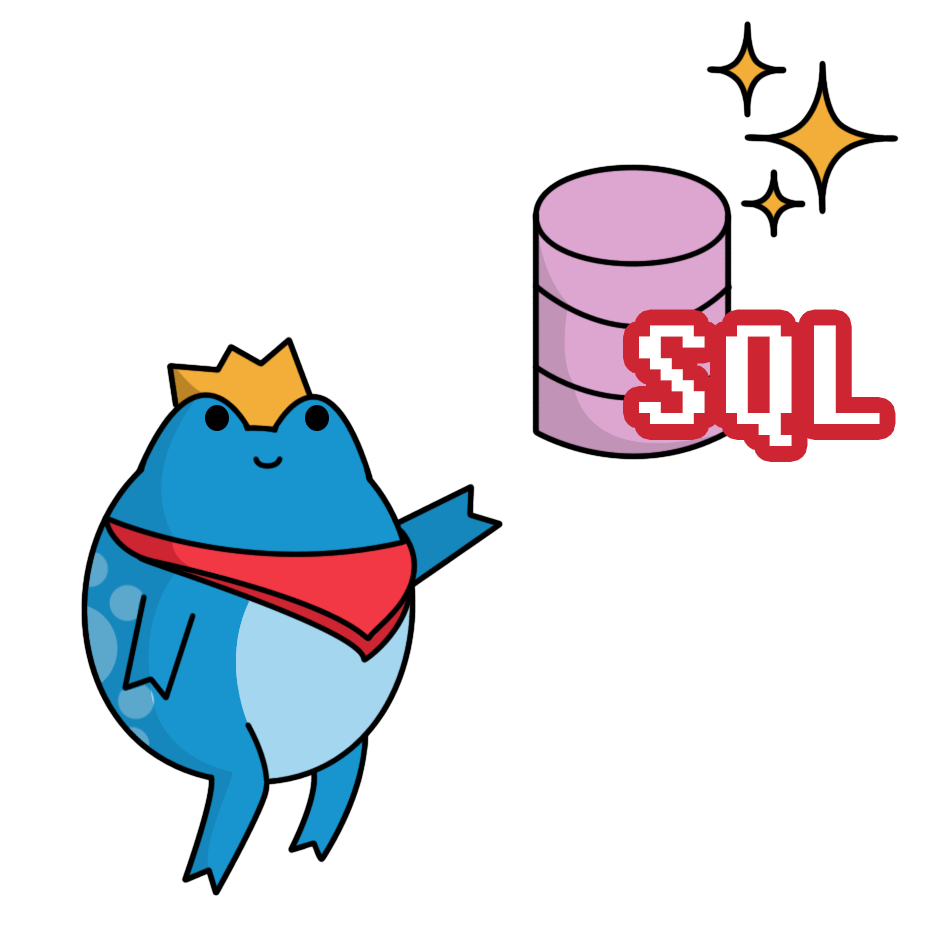
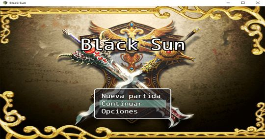
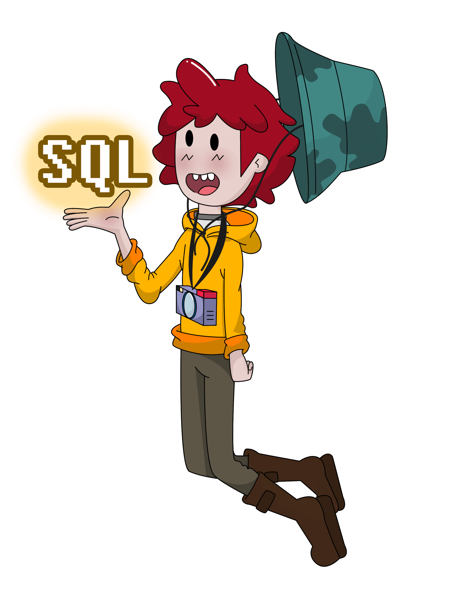

Inicio
Soy ingeniera en Desarrollo y Gestión de Software. He participado en la creación de un Repositorio Institucional y he trabajado en la construcción de varios proyectos. Disfruto mucho realizando trabajos de desarrollo web, como hobby practico la ilustración y el dibujo digital.
Actualmente, estoy buscando mi primer empleo para poder establecer una trayectoria profesional sólida y aprender nuevas cosas. Estoy emocionada por las oportunidades que vendrán y ansiosa por crecer en mi carrera.

TRABAJO
Además de contar con una ingeniería concluida, poseo un título a nivel Técnico Superior Universitario en Desarrollo de Software Multiplataforma. Cabe mencionar que, para lograr concluir satisfactoriamente ambas formaciones, realicé dos periodos de estancia que me proporcionaron una valiosa experiencia "profesional". Estos son mis trabajos destacados:
RIIEDEM
Repositorio Institucional para Instituciones Educativas del Estado de México
Es una propuesta de repositorio institucional para diversos planteles educativos, cuya finalidad es preservar la información de los docentes, permitiéndoles almacenar datos relacionados con su labor académica. La función principal de este repositorio es su capacidad para funcionar como una aplicación nativa.
Ver más
VINCULACIÓN
Sector Empresarial
Consiste en la implementación de un sitio web de uso interno para el área de Relaciones Industriales. El objetivo principal del sitio web es describir las funciones de cada sector que conforma esta área, proporcionando un listado de las empresas vinculadas con información actualizada y concreta.
Ver más
GELATINAS COKIS

Se trata de un sitio web para un pequeño negocio local denominado "Gelatinas Cokis", que se enfoca en presentar la historia del propietario y sus trabajos.
Ver más
BLACK SUN
Es un pequeño videojuego realizado con la finalidad de establecer misiones precisas sin "bugs", enfocándose en el entorno visual del usuario y teniendo en cuenta la jugabilidad para los usuarios.
Ver más
ACERCA DE

¡Hola! Soy Yenifer Hernández, también conocida como Yenifer Hzu. Recientemente, he culminado mis estudios en la Universidad Tecnológica Fidel Velázquez, especializándome en Ingeniería en Desarrollo y Gestión de Software.
Soy una apasionada del desarrollo web y me encanta trabajar en la creación de sitios atractivos y funcionales. Tengo conocimientos en HTML, CSS, PHP, MySQL y SQL, así como en el manejo de herramientas como RPG Maker MV, Adobe Photoshop y Canva.
Me considero una persona sensata, responsable y con una gran capacidad para trabajar en equipo. La organización y la capacidad de aprender rápidamente son parte de mis fortalezas.
Además de la programación, tengo una fuerte pasión por el dibujo y el arte digital, lo que me motiva aún más a desenvolverme en el área del desarrollo web, donde puedo combinar creatividad y tecnología.
Como ingeniera de software, creo firmemente en que nuestro principal propósito es resolver problemas con los recursos que tenemos a nuestra disposición. Es un desafío que me apasiona enfrentar y que me motiva a seguir creciendo profesionalmente.
Estoy emocionada por lo que el futuro tiene reservado para mí en este emocionante mundo del desarrollo web y las tecnologías digitales.
CONTACTO
Si te ha gustado mi trabajo, no dudes en contactarme